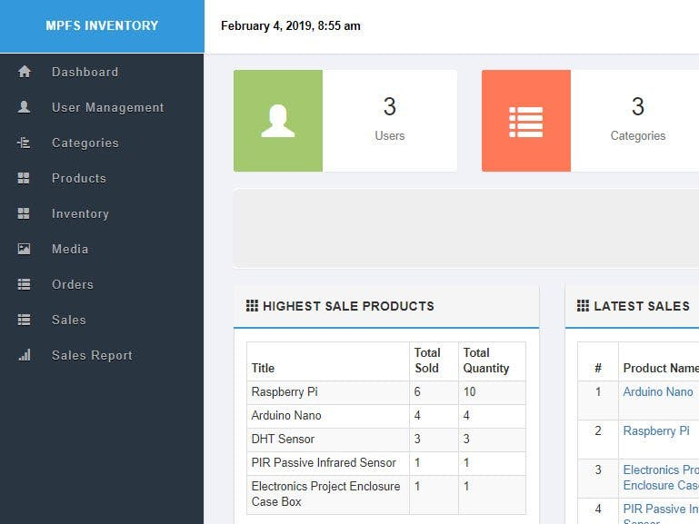
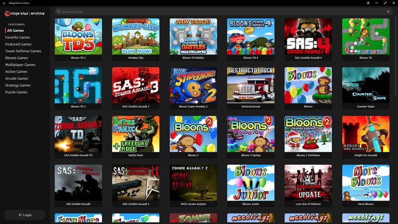

Education
BACHELOR SCIENCE OF INFORMATION TECHNOLOGY
2022 - PRESENT
Network Configuration
Configured Virtual Network (CISCO Packet Tracer)

System Assembly
Built a PC and installed OS and necessary programs.

Web Development
Learned how to make and maintain a website

Projects
Inventory Management System
A point-of-sale system designed to manage inventory, sales, and transactions.
GameVault
A web app for archiving and organizing games, allowing users to keep track of their collection in one place.
XpenseTracker
A personal finance tracker built to monitor income and expenses, helping users manage their budget effectively.
Skills
Graphic Design
Creating visual content using tools like Photoshop and After Effects to communicate ideas and enhance digital media.
3D Modeling and Design
Developing 3D assets and environments using Blender for games, animation, or visual presentations.
Network Administration
Managing and configuring networks, ensuring connectivity, security, and efficient system performance.
Web Exploitation
Exploring web vulnerabilities and security flaws to understand threats and strengthen web applications.
Web Development
Building responsive and user-friendly websites using modern technologies like HTML, CSS, JavaScript, and React.
Game Development
Designing and programming interactive games with a focus on logic, graphics, and player experience.
Database Management
Creating, organizing, and maintaining databases to ensure efficient data storage, retrieval, and security.
Technical Support
Providing troubleshooting, IT assistance, and problem-solving to help users with technical issues.
Contact Me
Feel free to reach out by filling the form below